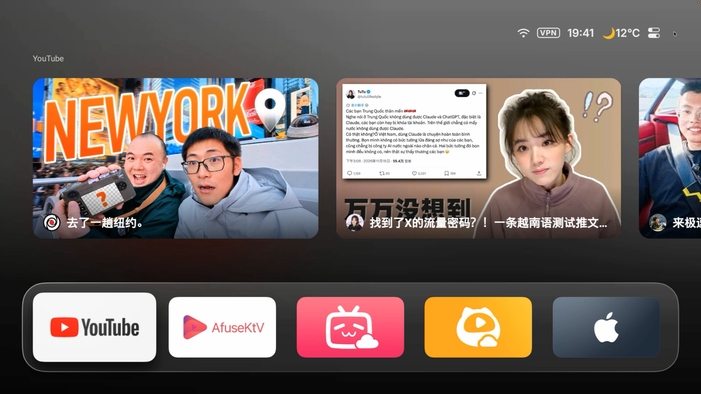
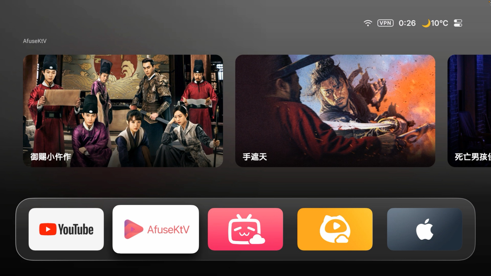

开源 · 免费 · 无广告
Aeria-CleanYourTV 干净，是电视该有的样子
Aerial 的干净桌面，和 CleanYourTV 的系统瘦身，合进同一个 App。没有广告，没有推荐流——打开电视，只有壁纸、天气，和你常用的 App。




Top Shelf 实拍 · 点图标切换 —— 点一下底板上的 App 图标，就切到它那组 Top Shelf 大卡片：YouTube、AfuseKtV、哔哩、虎牙，都是索尼电视上截下来的实拍。点画面空白处或下面的圆点也能换一张。
一个桌面，三种性格。
航拍、资深影迷、跟随 App——不是三套皮肤，是三种完全不同的桌面气质。在壁纸设置里随时切换，换一种，心情也跟着换。

航拍影片全屏播放中 · 俯瞰地球
风格 01 · 航拍
飘在云端，安安静静。
Apple TV 的航拍影片全屏缓缓流动——云海、梯田、海岸、城市夜空。玻璃底板浮在画面之上，左上角只有时钟和天气，别的什么都不抢镜。
适合把电视当作客厅的一扇窗：不看节目的时候，它就是风景本身。


资深影迷轮播中 · 每 8 秒换一张
风格 02 · 资深影迷
打开电视，先看今天什么最火。
TMDB 今日趋势全屏轮播：电影和剧集取最大的一张剧照铺满屏幕，作品标志、播出平台，还有 TMDB、IMDb、烂番茄、Trakt 四家评分一起亮出来。8 秒换一张，遥控器左右键也能翻。
适合影迷的客厅：还没想好今晚看什么，先让电视替你把海报墙转起来。
背景实时跟随焦点
焦点背景轮播 —— 焦点停在哪个 App 上，整块背景就换成它的画面，上面五张实拍就是五种焦点背景。
风格 03 · 跟随 App
焦点走到哪，背景跟到哪。
焦点停在哪个 App 上，整块背景就换成它的画面：第一排的 App 可以各自设一张自定义背景图，第二排起则直接跟随 App 自身的画面。焦点一动，整个客厅的色调都跟着变。
适合想要「活」一点的桌面：每一次移动焦点，都是一次换景。
同一个电视，两种首页。
拖动中间的手柄对比一下：左边是 Aeria-CleanYourTV，右边是电视原装首页的样子。两边都是电视实拍。

左右拖动对比 —— 手柄也可以用键盘左右方向键移动；两侧均为电视实拍。
安静，是最好的界面。
打开电视，你看到的是你的壁纸和你用的 App。仅此而已。
首页
像 Apple TV 一样顺手。
常用的 App 排成一排，放在玻璃底板上。选中时轻轻浮起、带一圈白边，坐在沙发上也看得清。
长按 OK 键可以移动、移到文件夹、隐藏、查看信息或卸载；选「开机时打开」，开机或待机醒来就直达那个 App 或信号源。系统自带的 App 也能收进文件夹，不再占地方。
Top Shelf · 焦点展示
焦点停在哪，舞台就给谁。
借鉴 Flow 的 Top Shelf：焦点停在第一排 App 上，屏幕上方展开它的舞台——优先显示 App 的功能卡片，其次是你给它设的自定义图片，再其次是 App Art。点功能卡片能直接进详情，App 没给详情页时，就打开 App 本身。
每个第一排 App 还能单独设一张全屏焦点背景图，地址在手机页里填，换图不用重装 APK。动态壁纸下 Top Shelf 自动让位，安安静静。
资深影迷 · TMDB 今日趋势
电视闲下来，就是一块电影海报墙。
把 Hume 的轮播搬进壁纸和屏保：TMDB 今日趋势的电影与剧集，取最大的一张剧照全屏铺开，8 秒换一张，左右键随时切换。作品标志、完整简介、播出平台一应俱全。
评分不只一家：TMDB 之外还有 IMDb、烂番茄和 Trakt，有数据才显示。桌面和屏保共用同一份进度——进屏保是哪张，回桌面还停在哪张。TMDB 密钥填在手机页里，和天气密钥放在一起。
天气
抬头就知道今天穿什么。
时钟旁边的五行天气：今天显示数据源的原文说法（如和风的「晴间多云」），下面是明天、后天、大后天的预报，最后一行是天气预警。默认源与和风双源可选，和风按国标云量成数判断「晴转多云」这类说法，不瞎猜。
整点和半点各更新一次，失败就沿用上次的结果，不拿空屏糊弄你。
空闲的时候，把客厅交给风景。
Apple TV 的航拍影片，从太空到海底；停在主屏幕时在 App 后面慢慢播放，按任意键就停在当前画面。

壁纸与屏保
会动的风景，或者你的照片。
壁纸可以是航拍、资深影迷轮播、必应每日一图、内置壁纸，也可以是手机传上来的照片和视频，全屏铺开，Dock 压在上面，什么都不挡。
屏保五种：航拍、时钟、视频、资深影迷、跟随系统。布局也能自己定：每排 4、5 或 6 个 App，单排或双排，时钟大小、App 名称、第一排底板都可调。
用手机设置
扫一下，不用遥控器打字。
扫电视上的二维码，在手机上整理主屏幕：拖动排序、改名、换图标、文件夹、隐藏、加 HDMI，还能传照片和视频、选壁纸、换屏保、给第一排 App 填焦点背景图地址。
各种密钥也都在手机页里填：TMDB、OMDb、Trakt、和风天气——一次填好，电视上不用对着软键盘逐字敲。

系统瘦身
自带的臃肿，清爽地退场。
继承 CleanYourTV 的本事：内置一页 Aerial 风格的系统瘦身，界面清爽、功能不减。不要的东西让它安静待着，电视跑起来更轻。
控制中心
常用开关，一键就到。
信号源、网络、设置、音量、亮度都收在一处；HDMI 还能固定到首页，一键切换。有新版本时，控制中心里直接提示下载安装。
开机就是它。待机也赶不走。
国产电视只认自家桌面，待机还会清理第三方 App。Aeria-CleanYourTV 不用 root，也不停用系统应用。
接管 HOME 键
能设成默认桌面就设；不行就由桌面守护把它拉回来。原来的桌面也还在，随时能回去。
被杀后快速复活
待机强停第三方 App 是不少电视的习惯——它会被系统马上拉起来，按下主页键，看到的还是它。
断电重启也是它
拔电再开机，自动接管，不用重新设置。已在索尼 KD-43X85K（Android TV 12）上长期实测。
三分钟装好。
不用 root，随时能还原。
在电视上打开 ADB 调试
设置 → 关于 → 连按版本号或产品型号进入开发者模式，再打开 ADB 调试（或 USB 调试）和「安装未知来源的应用」。电视 IP 在 设置 → 网络 → 已连接的网络 里。
下载并安装 APK
从 GitHub Releases 下载 Aeria-CleanYourTV.apk，用电脑、手机 ADB 工具或 U 盘装到电视上——电脑和电视连同一个网络即可。没有电脑时，U 盘拷贝安装也可以。
按主页键，选「始终」
装好后按遥控器主页键，系统问「使用哪个应用」时选 Aeria-CleanYourTV 并选「始终」。国产电视不弹问时，从「我的应用」打开它，按里面的入口开启桌面守护即可。
Aeria-CleanYourTV 是二合一融合版，发布包以 GitHub Releases 上的 Aeria-CleanYourTV.apk 为准；上面是它的两个来源项目。
常见问题
会不会把电视弄坏？怎么还原？
不会。它不动系统应用，只授予几项权限、改桌面和屏保设置，这些都能撤销：清除默认桌面或直接卸载，就回到原来的桌面，设置和 App 都不受影响。
会员、账号和有线电视受影响吗？
都不受影响。它只换桌面：各家的会员、语音助手、账号、有线电视都照常使用，原来的桌面也能从 App 列表打开。开机广告是固件播的，桌面换掉也去不掉它。
哪些电视能用？
Android TV / Google TV 的电视、盒子和投影仪都可以试，原生系统最省事。LG webOS、三星 Tizen、华为鸿蒙的系统不一样，装不了。开发与日常实测机型是索尼 KD-43X85K（Android TV 12）。
「资深影迷」的 TMDB 密钥在哪填？
扫码打开手机页，在「更多」里和 OMDb、Trakt、天气密钥填在同一区域。v3、v4 两种密钥都能贴，它会自动认。没填或没网时，有缓存就继续显示上次的榜单；从来没拉到过，才会隐藏。
航拍影片从哪来？费流量吗？
直接从 Apple 的服务器播放，1080p，码率约 15–20 Mbps。连不上时会自动改用照片屏保，不会黑屏干等。
它和 Aerial、CleanYourTV 是什么关系？
Aeria-CleanYourTV 是把两者合并成的二合一 App（包名 com.gathin.slimtv）：桌面与壁纸来自 Aerial，瘦身能力来自 CleanYourTV，再加上 Top Shelf（参考 Flow）、资深影迷轮播（参考 Hume）等融合版独有的东西。感谢四位原作者。